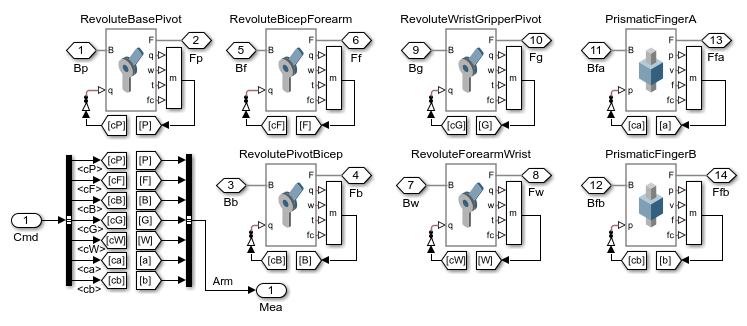
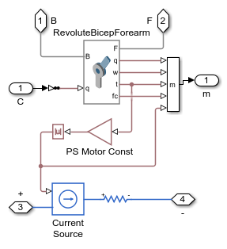
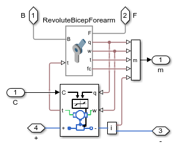
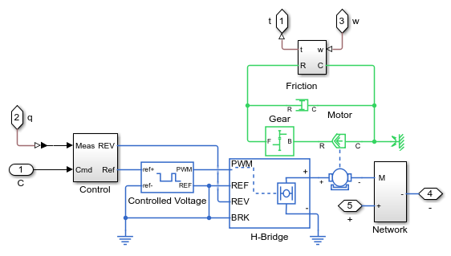
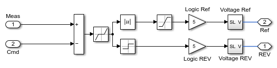
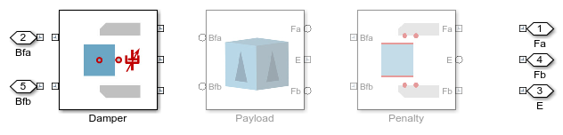
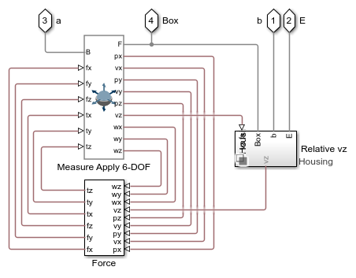
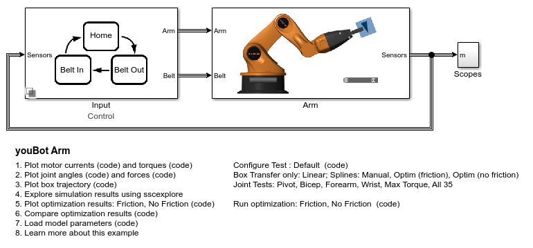
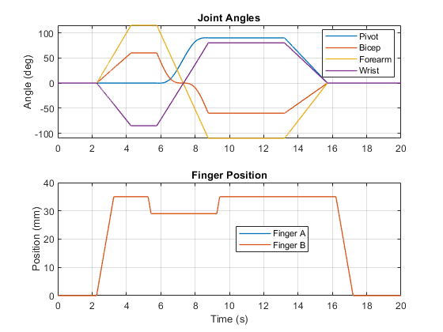
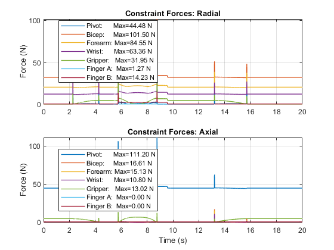

youBot Arm
This examples models a robotic arm and two conveyor belts. One conveyor belts bring blocks to the robot. The robot grabs the block, flips it over and transfers it to another conveyor belt which transports it away from the robot.
This example can be used to determine requirements for electrical and mechanical design, detect integration issues, design and test control logic, and optimize path planning.
Contents
- Model
- Arm Subsystem
- Actuation Subsystem, Motion Variant
- Actuation Subsystem, Motor Variant
- Forearm Motor Actuation, Ideal Variant
- Forearm Motor Actuation, Motor Variant: Motor - Joint Interface
- Forearm Motor Actuation, Motor Variant: Motor Subsystem
- Forearm Motor Actuation, Motor Variant: Motor Control
- Environment Subsystem
- Belt In Subsystem
- Gripper Force Subsystem
- Gripper Force Subsystem, Damper Variant
- Gripper Force Subsystem, Penalty Variant
- Input Subsystem
- Logic Subsystem
- Simulation Results from Simscape Logging
Model
The top level of the model contains hyperlinks that configure the model according to the test you wish to perform. The default test is for the entire system (robot arm and conveyor belts).
Box transfer tests can be run to determine the amount of power required for a specific manipulator trajectory.
Joint tests can be run to determine required motor torque and the forces that the bearings will experience.
Arm Subsystem
This subsystem includes the robot arm which was imported from CAD software, the joint actuators, and the environment surrounding the robot. Hyperlinks at this level configure the robot joints to use prescribed motion (Motion), or modeled as a connected electrical network (Motor). Motion actuation is typically used to determine torque requirements for the motor, and based on those requirements the motors in the electrical network can be selected.

Actuation Subsystem, Motion Variant
This variant includes the robot arm joints which were imported from CAD. They have been configured to use prescribed motion, where the angle for the joint is specified by an input signal. The simulation calculates the torque required to produce this motion. The radial and axial forces for the motor bearings are also calculated for each joint. This information is useful to refine the requirements for the motor, gear boxes, and the mechanical requirements for the bearings.
Actuation Subsystem, Motor Variant
This variant includes the electrical network which provides the power to actuate each joint. The joint definitions were imported from a CAD assembly.
The actuators can be configured to use prescribed motion and estimate the current draw (Ideal), or the joints can be driven by electrical motors (Motor). Clicking on the hyperlinks will change multiple motors at the same time. The motors can be configured individually (Ideal or Motor) by right-clicking on the block and overriding the subsystem variant. This permits very focused testing on individual joints or joint combinations.
Forearm Motor Actuation, Ideal Variant
This variant is used to determine the requirements for the electrical system. The joints are driven using prescribed motion, and the simulation calculates the torque required to produce this motion. The radial and axial forces for the motor bearings are also calculated for each joint. This information is useful to refine the requirements for the motor.
This variant also estimates the amount of electrical power required to produce this motion using the actuation torque. Each joint draws current from the power supply, making it possible to determine the requirements for power connections and the supply. The current estimation used here requires selecting a gear ratio, motor torque constant, and an armature resistance. The absolute value of the actuation torque is used because though the actuation torque can switch sign, current is always drawn from the power supply.
Forearm Motor Actuation, Motor Variant: Motor - Joint Interface
This variant actuates the robot arm joints using an electrical actuator. At this level, the connection between the motor and the robot joint is shown.
This variant does not use prescribed motion. Torque provided by the electrical model of the motor is applied to the joint. The rotational speed of the electrical motor and joint are forced to be identical during simulation to ensure that the physics is accurate.
Forearm Motor Actuation, Motor Variant: Motor Subsystem
This subsystem models the motor controller, motor drive circuit, motor, gearbox, and motor friction. Parameter values for the motor are taken directly from manufacturer data sheets (see model parameters).
Forearm Motor Actuation, Motor Variant: Motor Control
This subsystem implements the control system for the motor. A simple bang-bang controller based on position error is used. A deadzone prevents chattering in the system. More complex control algorithms can be substituted here.
Environment Subsystem
This subsystem models the environment surrounding the robot arm. It includes two conveyor belts and a load.
Hyperlinks at this level configure the connection between the gripper and the load. Clicking on hyperlink Payload will assume the load is rigidly attached to the gripper. Hyperlinks Damping and Penalty each model a contact force between the gripper and the load at two levels of fidelity. Clicking on these hyperlinks adjusts variant subsystems Load and Gripper Force simultaneously to ensure the selected variants are compatible. These settings are selected based on the test that is performed. The only one that should be overriden manually is switching between variants Damper and Penalty for the Gripper Force subsystem when the Box variant is selected for the Load subsystem.
Belt In Subsystem
This subsystem models the conveyor belt, contact force between the box and the belt, and the light curtain at the end of the belt.
The conveyor belt is driven at speed vx. The motor driving the belt is not modeled. The rollers rotate to simply give a visual indication that the belt is on.
The contact force is active if the upper or lower surface of the belt encounters the bottom face of the box. The calculated normal force is used to model a sensor that will detect if a box is on the belt. This signal is sent to the supervisory logic controller for the system. The only difference between Belt In and Belt Out is in the contact force - in Belt Out, the contact force is modeled between the belt and the top face of the box.
The light curtain detects if the box is blocking any of its beams and sends a signal to the logic controller.
Transform Sensor EE measures the x-y-z position of the end effector and saves it to the workspace. This quantity is used for plotting purposes, both during normal desktop simulation and it is saved during the optimization tests to show the set of trajectories tested.

Gripper Force Subsystem
This subsystem shows the three variants for the gripper force. These variants are selected using the hyperlinks one level higher in the model or by using the hyperlinks at the top level that configure the test.
Gripper Force Subsystem, Damper Variant
This subsystem models the contact force between the gripper and the box as a very stiff damper that is only active when the box is grasped by the gripper fingers. The force subsystem measures the displacement between a reference frame on the gripper and the box to determine if the gripper could grab the box. If it can, the damper becomes active.
This is an abstract representation of the force. The simplifying assumptions is computationally very efficient. It assumes the box will slip very, very slowly with respect to the gripper. It does not consider the exact geometry of the fingers or the gripper itself - a misaligned box can be grasped using this force.
There are two methods for measuring the velocity of the box along the normal of the gripper fingers. One measures it with respect to a reference frame on the gripper housing. The other takes the difference of relative velocity with respect to each finger, allowing the box to move relative to the gripper housing.
Gripper Force Subsystem, Penalty Variant
This subsystem models the contact force between the gripper and the box as a stiff spring-damper between multiple points on the gripper finger and a square surface on the box. This requires more computation, but is a more realistic way to model the contact force. It can model cases where the box and the gripper are misaligned.
Input Subsystem
This variant subsystem configures the inputs to the robot arm system. The variants are configured to permit unit testing of individual components of the system.
The Control variant implements the supervisory logic for the entire system. The Signals variant is an open loop test that can actuate any or all of the joints and the conveyor belts. The Splines variant is used to test trajectories for transferring the box from one belt to the other. The Control Belt variant permits closed loop testing of the conveyor belts and open loop testing of the robot arm.
Logic Subsystem
This state chart implements the supervisory logic for the robot arm, robot gripper, and both conveyor belts. Information from sensors in the model come in as input signals, and outputs from the state chart will control movement of the robot arm and conveyor belts. During simulation, the state chart is animated to show the active state in each chart.
All four state charts are interconnected. Events in one state chart trigger actions in others. For example, in state chart BeltIn, when the light curtain on the belt is blocked, input BeltIn_LC=0. That condition permits the BeltIn state chart to transition to state BoxReady. As the BeltIn state chart transitions to state BoxReady, the belt will be turned off (BeltIn_En=0). The event GetBox will be broadcast to state chart Robot, which causes that state chart to transition from StartHome or Home to GoBeltIn. Entering state GoBeltIn sets output Way, which controls the commands sent to the robot joints.

Simulation Results from Simscape Logging
The plot below shows the current drawn by all motors in the youBot robotic arm.
The plot below shows the 3D trajectory of the box moved by the youBot robotic arm.
The plot below shows the torque or force for each motor in the youBot robotic arm.
The plot below shows the positions of the joints in the youBot robotic arm.
The plot below shows the constraint forces for each joint in the youBot robotic arm.
